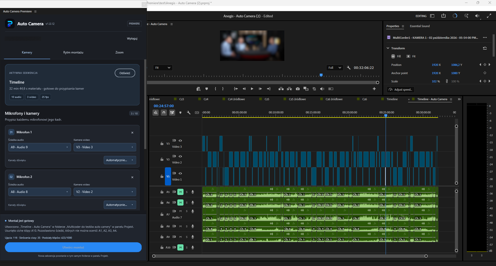

A recorded interview often has several camera angles and long stretches of conversation to cut. Auto Camera for Adobe Premiere uses the microphone recordings to select shots and create a separate, editable sequence. The preparation matters: give the panel synchronized cameras and clear microphone tracks before asking it to build the edit.
1. Prepare and synchronize the recordings
Synchronize the camera recordings and microphones in Premiere first, then check their alignment near the beginning and end of the conversation. Auto Camera uses existing timeline positions; synchronization is a preparation step, not a feature of the panel.
Use separate microphone tracks containing source PCM or float WAV files. Multichannel WAV is supported. Analysis reads those source files rather than Premiere audio effects or the processed mixer signal, so listen to the original recordings when troubleshooting detection. Compressed audio, nested sequences, reverse playback and speed changes are not supported for analysis.
The current panel requires Premiere Pro 26.2 or later. Its package is designed for Windows and macOS; native integration has been tested on Windows, while macOS validation is still pending.
2. Assign microphones to camera angles
Read the active sequence and create up to 10 microphone–camera mappings. For each speaker, select the audio track and the video track to show. Use automatic source-channel selection or choose a channel manually when a WAV file contains several microphones.
Several microphones can share one camera. For example, two guests in a common shot can each retain their own microphone mapping. Check a short section where each person speaks alone, then a section with interruptions, before processing the full recording.

3. Choose the rhythm of the camera cuts
Adjust the voice threshold, reaction time, speaker hold and minimum shot duration. Longer holds help avoid a new angle for every brief interjection. A shorter reaction can suit a faster exchange, provided microphone spill is not selecting the wrong speaker.
Cut anticipation can bring the next speaker on screen up to two seconds earlier. Try it on a representative passage and review the result rather than assuming that the maximum value is best. Add wide shots at fixed or random intervals, or between speaker changes, and choose a duration that fits the conversation.
4. Treat silence and zoom as editorial choices
Silence removal trims pauses across audio and video together. Set a silence threshold, a minimum pause and margins around speech; the Auto option can estimate a threshold from the chosen microphones. Listen to quiet words, breaths and the beginning of answers after trimming. A reflective pause may still belong in the interview.
For digital zoom, select the person to move toward in a one-, two- or three-person shot. Adjust speed and enable movement separately for each microphone and the wide shot. The movement uses Motion position and scale keyframes. Check framing and image quality at the largest scale you intend to use.
5. Generate a copy, then review it
Choose whether the cut should use a new top video track or trimmed camera tracks in the copied sequence. Auto Camera saves the result in a separate project file and leaves the original project available. Review entrances, interruptions, wide shots and removed pauses; move cuts or continue editing with normal Premiere tools.
See Auto Camera for Adobe Premiere features and access information for the current requirements. For switching during a live production, use the automatic camera switching guide for vMix.